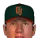
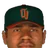
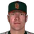
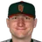
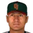
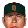
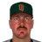

Federal Baseball League · Depth chart & lineups
Orlando Juicers
← Team page · Payroll · Transactions
Based on games played and started through May 13, 2002. The OOTP export has no saved depth chart or lineup card, so this is derived from real usage. Lineups and depth chart list only players on the active roster now (26 players).
Most common lineups
For each batting-order spot, the active player who started there most often against that kind of starter (each player used once). Starts in spot = games he started in that spot out of the games against that hand. AVG/OBP/SLG: his season line with this club.
vs. right-handed starters 28 games
| # | Player | Pos | Starts in spot | AVG | OBP | SLG |
|---|---|---|---|---|---|---|
| 1 | RF | 26 of 28 | .354 | .386 | .443 | |
| 2 |  Jeff Frye | DH | 22 of 28 | .273 | .338 | .409 |
| 3 | 1B | 27 of 28 | .272 | .321 | .437 | |
| 4 | 2B | 24 of 28 | .259 | .314 | .504 | |
| 5 | 3B | 21 of 28 | .305 | .333 | .532 | |
| 6 | CF | 13 of 28 | .286 | .354 | .368 | |
| 7 |  Geronimo Berroa | LF | 13 of 28 | .188 | .308 | .347 |
| 8 |  Mike Lansing | SS | 12 of 28 | .250 | .302 | .432 |
| 9 |  Jared Sandberg | 2B | 9 of 28 | .155 | .220 | .286 |
vs. left-handed starters 12 games
| # | Player | Pos | Starts in spot | AVG | OBP | SLG |
|---|---|---|---|---|---|---|
| 1 | RF | 11 of 12 | .354 | .386 | .443 | |
| 2 | Jeff Frye | DH | 11 of 12 | .273 | .338 | .409 |
| 3 | 1B | 12 of 12 | .272 | .321 | .437 | |
| 4 | SS | 12 of 12 | .259 | .314 | .504 | |
| 5 | 3B | 11 of 12 | .305 | .333 | .532 | |
| 6 | CF | 9 of 12 | .286 | .354 | .368 | |
| 7 | Jared Sandberg | 2B | 5 of 12 | .155 | .220 | .286 |
| 8 | Geronimo Berroa | LF | 5 of 12 | .188 | .308 | .347 |
| 9 | Mike Lansing | SS | 3 of 12 | .250 | .302 | .432 |
Depth chart games started by position through May 13
| Pos | Role | Player | GS at pos | G | AVG | OBP | SLG | HR |
|---|---|---|---|---|---|---|---|---|
| C | Starter | 23 | 29 | .261 | .281 | .337 | 0 | |
| Backup 1 | Kevin Brown | 3 | 6 | .143 | .143 | .214 | 0 | |
| 1B | Starter | 39 | 40 | .272 | .321 | .437 | 6 | |
| Backup 1 | Jared Sandberg | 1 | 30 | .155 | .220 | .286 | 2 | |
| Backup 2 | Rodney Nye | 0 | 6 | .500 | .600 | 1.250 | 1 | |
| Backup 3 | Kevin Brown | 0 | 6 | .143 | .143 | .214 | 0 | |
| 2B | Starter | 21 | 39 | .259 | .314 | .504 | 8 | |
| Backup 1 | Jared Sandberg | 18 | 30 | .155 | .220 | .286 | 2 | |
| Backup 2 | Mike Lansing | 1 | 29 | .250 | .302 | .432 | 2 | |
| Backup 3 | Jeff Frye | 0 | 34 | .273 | .338 | .409 | 4 | |
| 3B | Starter | 36 | 37 | .305 | .333 | .532 | 7 | |
| Backup 1 | Jared Sandberg | 3 | 30 | .155 | .220 | .286 | 2 | |
| Backup 2 | Rodney Nye | 0 | 6 | .500 | .600 | 1.250 | 1 | |
| SS | Starter | Mike Lansing | 23 | 29 | .250 | .302 | .432 | 2 |
| Backup 1 | 16 | 39 | .259 | .314 | .504 | 8 | ||
| Backup 2 | 0 | 37 | .305 | .333 | .532 | 7 | ||
| LF | Starter | Geronimo Berroa | 27 | 33 | .188 | .308 | .347 | 4 |
| Backup 1 | 11 | 16 | .358 | .386 | .642 | 3 | ||
| Backup 2 | 2 | 10 | .250 | .368 | .312 | 0 | ||
| CF | Starter | 37 | 38 | .286 | .354 | .368 | 0 | |
| Backup 1 | 2 | 10 | .250 | .368 | .312 | 0 | ||
| Backup 2 | Geronimo Berroa | 1 | 33 | .188 | .308 | .347 | 4 | |
| Backup 3 | 0 | 38 | .354 | .386 | .443 | 1 | ||
| RF | Starter | 37 | 38 | .354 | .386 | .443 | 1 | |
| Backup 1 | Geronimo Berroa | 3 | 33 | .188 | .308 | .347 | 4 | |
| Backup 2 | 0 | 10 | .250 | .368 | .312 | 0 | ||
| DH | Starter | Jeff Frye | 33 | 34 | .273 | .338 | .409 | 4 |
| Backup 1 | Geronimo Berroa | 2 | 33 | .188 | .308 | .347 | 4 | |
| Backup 2 | Jared Sandberg | 2 | 30 | .155 | .220 | .286 | 2 | |
| Backup 3 | 2 | 16 | .358 | .386 | .642 | 3 |
Rotation OOTP projected starters (projected_starting_pitchers.csv)
| # | Pitcher | Active | GS | W-L | IP | ERA | WHIP | K |
|---|---|---|---|---|---|---|---|---|
| 1 | Joe Kennedy | Yes | 8 | 2-3 | 42.2 | 4.85 | 1.31 | 30 |
| 2 | Mark Hendrickson | Yes | 8 | 3-3 | 42.0 | 6.00 | 1.76 | 19 |
| 3 | Jose Mercedes | Yes | 8 | 2-3 | 44.2 | 5.64 | 1.48 | 23 |
| 4 | Humberto Montemayor | Yes | 6 | 1-2 | 31.0 | 5.52 | 1.61 | 16 |
| 5 | Yes | 9 | 3-5 | 63.1 | 3.69 | 1.34 | 43 |
Bullpen roles from usage: closer = most saves, setup = most holds, long relief = most innings per outing (1.1+ IP)
| Role | Pitcher | Throws | G | SV | HLD | IP | IP/G | ERA | K |
|---|---|---|---|---|---|---|---|---|---|
| Closer | Byung-hyun Kim | RHP | 10 | 9 | 0 | 9.1 | 0.9 | 3.86 | 11 |
| Setup | Al Reyes | RHP | 17 | 2 | 5 | 13.2 | 0.8 | 1.98 | 11 |
| Setup | Tyler Walker | RHP | 13 | 0 | 3 | 18.1 | 1.4 | 5.89 | 15 |
| Long relief |  Cecilio Ruiz | LHP | 8 | 0 | 0 | 22.0 | 2.8 | 4.91 | 9 |
| Long relief |  Vicente Palacios | RHP | 5 | 0 | 0 | 11.1 | 2.3 | 5.56 | 3 |
| Middle relief |  T.J. Mathews | RHP | 12 | 0 | 2 | 14.2 | 1.2 | 3.07 | 15 |
| Middle relief | Clay Condrey | RHP | 12 | 0 | 1 | 16.2 | 1.4 | 10.26 | 7 |
Bench active position players outside the regular lineups
| Player | Pos | G | PA | AVG | OBP | SLG |
|---|---|---|---|---|---|---|
| LF | 16 | 57 | .358 | .386 | .642 | |
| RF | 10 | 19 | .250 | .368 | .312 | |
| Kevin Brown | C | 6 | 14 | .143 | .143 | .214 |
| Rodney Nye | 3B | 6 | 5 | .500 | .600 | 1.250 |
Injured list
Nobody on the injured list.